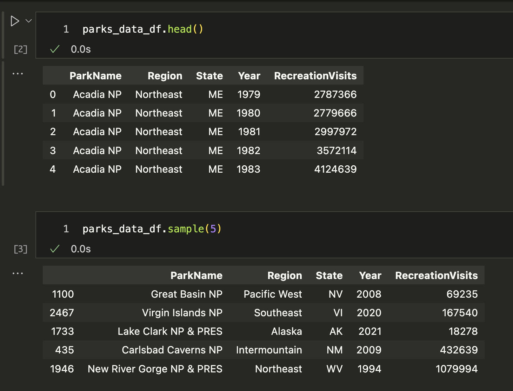
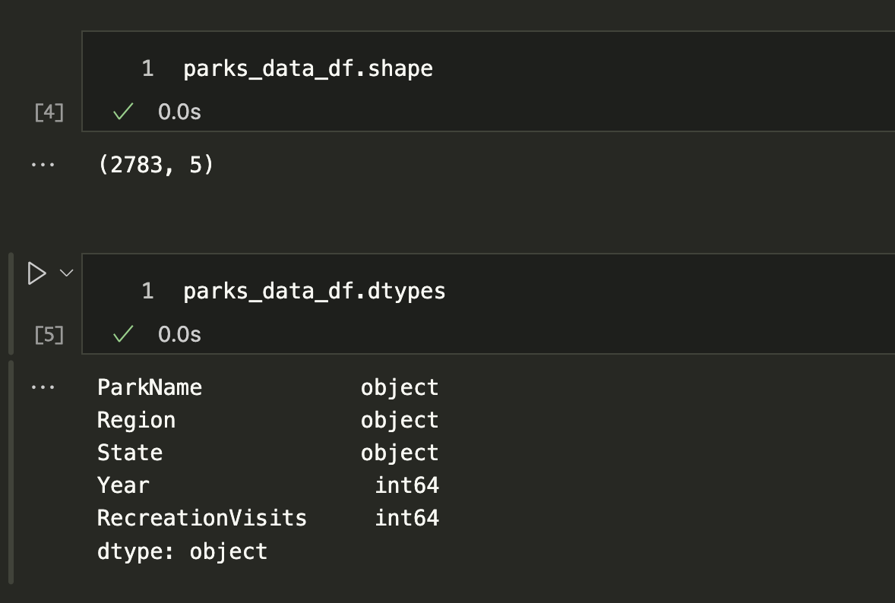
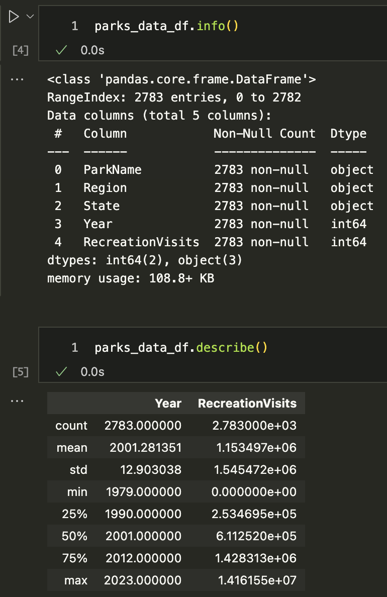

(Re)Introduction to Jupyter Notebooks & Pandas
So far in the course, when we’ve been writing Python code, we’ve either been using the Python interpreter in the terminal or saving a Python script. However, there’s a third way to write Python code that’s very popular—that is with Jupyter notebooks https://jupyter.org/. While many of you are familiar with Jupyter notebooks, this lesson will serve as a refresher and introduction to some of the features of Jupyter notebooks, as well as how to use them with the Pandas library.
So what is a Jupyter notebook?
Jupyter notebooks are a type of computational notebook, which is a type of document that can contain both code and rich text elements, such as figures, images, links, equations, and more. When you run code in a Jupyter notebook, the results appear directly beneath the code, which differs from running scripts where we need to print the output to see it.

A Brief History of Jupyter Notebooks
Jupyter notebooks originated as part of Project Jupyter initially in 2011, but fully released in 2014. However, the idea of code notebooks goes back much further. I can’t cover all the details here, but there’s a great Youtube talk about this history if you want a deeper dive: William Horton “A Brief History of Jupyter Notebooks” 2020. https://www.youtube.com/watch?v=NuRiz8CbvBg.

The idea for Jupyter notebooks draws heavily from the idea of literate programming, which was introduced by Donald Knuth in the 1980s. Knuth created projects like LaTeX and TeX, and he argued that code should be written in a way that is understandable to humans, and that the code and the documentation should be intertwined. While developers debate whether Jupyter notebooks actually fulfill this vision, they do provide at least a partial way to combine code and documentation in a single document.

This idea was also core to the development Wolfram Mathematica by the company Wolfram Research. For those unfamiliar, Mathematica is a computational software program used for symbolic and numerical calculations, and it has a notebook interface that allows users to combine code, text, and visualizations. If you drive to south Champaign, you’ll actually see one of the headquarters for Wolfram Alpha, which was founded here by Stephen Wolfram and Theodore Gray in 1987.

What really got Jupyter notebooks off the ground was the creation of IPython in 2001 as part of the creation of the Scipy and Numpy libraries, which was an interactive shell for Python. In particular, a group of developers, lead by Fernando Pérez, created the IPython notebook interface, which allowed users to create and share documents that contained live code, equations, visualizations, and narrative text for the first time in Python in 2011. This was the first version of Jupyter notebooks, and the name Jupyter is a nod to Galileo’s discovery of the moons of Jupiter (you can read more details on the wikipedia page https://en.wikipedia.org/wiki/Project_Jupyter).
Jupyter notebooks since their release have become enormously popular and a key infrastructure for the growth of data science since the mid-2010s. One of the things that made them so useful is that you could use them not just for Python, but also for R and Julia. For those unfamiliar, R is a programming language that is particularly popular in statistics and data science, while Julia is a newer programming language that is designed for high-performance numerical and scientific computing. R developed largely at the same time as Python, and Julia was created in 2012.

One of the big things that has happened in the last few years is the convergence of Project Jupyter with R and RStudio, through the creation of Posit, which was founded in 2022. This might be surprising to learn if you’ve heard people debate Python vs R, or if you’ve heard of the “notebook wars” of the late 2010s (you can read more about that here https://yihui.org/en/2018/09/notebook-war/).

While developers are still debating which programming language is better, there have also been some new developments, specifically the creation and release of Quarto, which is like Jupyter on steroids. You can learn more about Quarto here https://quarto.org/ and you’ve already come across examples of Quarto: The Responsible Datasets in Context Project uses it to create their website and interactive documents. Even more relevant to you all is this course website is built in Quarto!
While there’s more to this history of Jupyter notebooks and the rise of modern data science, I want to flag that Jupyter notebooks didn’t emerge out of thin air, and it is likely that in a decade we’ll be using something else entirely. For instance, already there is a new notebook called Marimo that is increasingly popular, and it is possible that it will become more widely used in the future (you can learn more about Marimo here https://marimo.io/).

Why Use Jupyter Notebooks?
While this history might make you hesitant to use or learn Jupyter notebooks, they are incredibly useful for a number of reasons.For example, we already mentioned that rather than writing a script and running it, you can write code in a Jupyter notebook and then run the cell to see the results. This is particularly useful for data analysis and debugging, as you can see the results of your code immediately.

Some people even use Jupyter notebooks to publish books and articles. For example, Melanie Walsh’s textbook Introduction to Cultural Analytics & Python is a collection of Jupyter notebooks, combined into a Jupyter book (you can explore the code in this GitHub repository: https://github.com/melaniewalsh/Intro-Cultural-Analytics).

Another great example is the Journal of Digital History, which publishes Jupyter notebooks as articles (you can explore their articles here: https://journalofdigitalhistory.org/).
Getting Started with Jupyter Notebooks
Download the Jupyter notebook version of this lesson: 01-intro-notebooks.ipynb
Open it in Jupyter and run the code examples as you read through the lesson. You can experiment, modify examples, and practice everything in real time!
The first step to trying out Jupyter notebooks is to install Jupyter. We can install Jupyter with pip (fyi if you are using anaconda, you already have Jupyter installed). We can find the command to install Jupyter in the documentation here https://jupyter.org/install or in the Python Package Index (PyPI) here https://pypi.org/project/jupyter/.

First, we need to activate our virtual environment, and then we can install the package with following command:
pip install jupyterSince we are using a virtual environment, we’ll also need a few extra commands:
python -m ipykernel install --user --name=is310-class-env #Or whatever you named your virtual environmentThis will make it so that your Jupyter notebook can access our virtual environment (i.e. it knows where your Python libraries are).
Jupyter Notebooks in the Browser
Once everything is installed, we can start a Jupyter notebook by running the following command in our terminal (would recommend doing this in your is310-coding-assignments directory):
jupyter notebookThis command immediately opens the Jupyter interface in our browser, usually at the following address: http://localhost:8888/tree. If it doesn’t open automatically, you can copy and paste this address into your browser.

Localhost is a special name that refers to the computer you are on. So when you open a Jupyter notebook, you are opening a server on your computer that is running the Jupyter notebook interface. This is why you can only access the notebook from the computer it is running on and can’t just send someone a link to your notebook.
Our first step is to create a new Python 3 notebook using the new button. You’ll notice that when you select new, you have the option to create a new Python 3 notebook or to use a virtual environment. We want to create a new notebook with our virtual environment so that we have access to all the libraries we’ve installed.

This opens up an empty notebook. You’ll notice that on the right hand side there’s a box that says Trusted and then next to that is the name of our virtual environment. This means that our notebook is running in our virtual environment. If you want to change this, you can select the Kernel dropdown menu and select a different virtual environment.
Now currently our notebook is named Untitled, but if we click on that name we can rename it.

I renamed my notebook IntroNotebooks (generally Jupyter notebooks are named using camel case, but you can name them whatever you want). Jupyter notebook autosaves your notebook, but it is always a good idea to explicitly save it, which you can do by clicking on File and then Save and Checkpoint, or by clicking the save icon in the toolbar (it is the floppy disk icon 💾).
Now when you look at your directory, you should see a new file called IntroNotebooks.ipynb. This is your Jupyter notebook file. Notice the extension .ipynb - this is the file extension for Jupyter notebooks.
Just like in the terminal, there are shortcuts we can use for working with Jupyter notebooks.
| Mac | Jupyter Function | Windows |
|---|---|---|
Shift + Return |
Run cell (Both modes) | Shift + Enter |
Option + Return |
Create new cell below (Both modes) | Alt + Enter |
B |
Create new cell below (Command mode) | B |
A |
Create new cell above (Command mode) | A |
D + D |
Delete cell (Command mode) | D + D |
Z |
Undo cell action (Command mode) | Z |
Shift + M |
Merge cells (Command mode) | Shift + m |
Control + Shift + - |
Split cell into two cells (Edit mode) | Control + Shift + - |
Tab |
Autocomplete file/variable/function name (Edit mode) | Tab |
Jupyter Notebooks in VS Code
While we can run our notebooks in the browser, we can also run them in VS Code. The benefit to running them in VS Code is that we can use the same interface for writing code and running notebooks, and we can take advantage of the other features of VS Code, such as the debugger, autocomplete, and GitHub Co-Pilot.
First, we should stop the Jupyter notebook server, which you can do by either pressing the Quit button on the main page or type Ctrl+c in the terminal and confirming by typing y and pressing enter. Then we can open VS Code and navigate to the directory where our notebook is located. You can either open the file only or open the entire directory.

Once you have your notebook open, you’ll again see a Select Kernel option in the top right corner. You can select your virtual environment from this dropdown menu. And if you want, you can create a new notebook entirely in VS Code by pressing ctrl + shift + p and then typing Jupyter: Create New Blank Notebook.
And finally to save your notebook, you can press ctrl/cmd + s or go to File and then Save.
Writing Code & Markdown in Jupyter Notebooks
Now that we have our notebook, we can start writing some code. Jupyter notebooks have two types of cells: code cells and markdown cells.
Initially, the notebook will create a code cell, which is where we can write Python code. We can also change the type of cell by clicking on the cell and then selecting the type from the dropdown menu in the toolbar. We can also hover at the top or bottom of the cell and that will display a + Code or + Markdown button.

Let’s first add our title to the notebook, by hovering at the top and selecting + Markdown cell. That will create a new cell above the existing one Then type # Introduction to Jupyter Notebooks and press Shift + Return on a Mac or Shift + Enter on Windows to run the cell.

Now we should see the title at the top. We can use any of the Markdown syntax we have learned so far to format our text. For example, we can use ## for a subheading, * for italics, ** for bold, and --- for a horizontal line, etc.
Now in a Jupyter notebook, we can still use much of the same Python syntax as our scripts. For example, going back to our Python Refresher II: Advanced Python, we could reuse some of the same code in this notebook (though I did add a few tweaks).
Try pasting the following within the first cell of the Jupyter notebook:
def check_movie_release(movie):
if movie['release_year'] < 2000:
print(f"{movie['name']} was released before 2000")
else:
print(f"{movie['name']} was released after 2000")
return movie['name']
recent_movies = []
favorite_movies =[
{
"name": "The Matrix IV",
"release_year": 2022,
"sequels": ["The Matrix I", "The Matrix II", "The Matrix III"]
},
{
"name": "Star Wars IV",
"release_year": 1977,
"sequels": ["Star Wars V", "Star Wars VI", "Star Wars VII", "Star Wars VIII", "Star Wars IX"],
"prequels": ["Star Wars I", "Star Wars II", "Star Wars III"]
},
{
"name": "The Lord of the Rings: The Fellowship of the Ring",
"release_year": 2001,
"sequels": ["The Two Towers", "The Return of the King"]
}
]
for movie in favorite_movies:
result = check_movie_release(movie)
if result is not None:
recent_movies.append(result)
print(recent_movies)Unlike with our scripts where we would need to save our file and then type python3 script.py, we can just click on the cell and either press Shift + Return on a Mac or Shift + Enter on Windows to run the cell.
Once you run the cell, you should see the following:
['The Matrix IV', 'The Lord of the Rings: The Fellowship of the Ring']You’ll notice that now there’s a number next to the cell. That indicates the order in which the cells were run. If you run a cell again, the number will increase. This is useful for keeping track of the order in which cells were run, especially if you have a large notebook.
Unlike with scripts, notebooks hold variables in memory, which means that our function now exists in the notebook and we can call in a new cell.
To test this out, add a new cell below our function one by pressing the + Code symbol when you hover. Then paste the following code and run it.
def updated_check_movie_release(movie, released_after_year, released_before_year=2024):
if released_after_year < movie['release_year'] and movie['release_year'] < released_before_year:
movie['recent'] = True
else:
movie['recent'] = False
return movieNow we can call this function in our for-loop by updating the original code:
for movie in favorite_movies:
updated_movie = updated_check_movie_release(movie, 2020)
if updated_movie['recent']:
recent_movies.append(updated_movie['name'])Now we should see just the The Matrix IV in our list of recent movies. You’ll notice I didn’t have to move the new function above our for-loop. But what happens if I save and close, then reopen the notebook?

You’ll notice that we get a NameError when we try to run the cell. This is because the function updated_check_movie_release is no longer in memory. This is one of the things that makes Jupyter notebooks great to use, but easy to mess up. We can run cells in any order, which means that we can easily lose track of what’s in memory. So to fix our mistake, we would need to move the updated function before we call it in the for-loop.
Pandas Library & Working with DataFrames

Jupyter notebooks are particularly useful for working with tabular data (that is data in spreadsheets), especially with the Python Library pandas https://pandas.pydata.org/docs/index.html.

The library was started by Wes McKinney in 2008 as a tool for working with financial data, but has since become one of the most popular libraries for data analysis in Python. We can see the growth in the number of contributors to the library over the years by going to the GitHub repository https://github.com/pandas-dev/pandas.

The library also has very active documentation and we can see more about the team behind it here https://pandas.pydata.org/about/team.html.

Notice that though Wes McKinney is no longer the lead developer, he is listed as the Benevolent Dictator For Life! While that’s a bit of a tongue-in-cheek title, I do recommend the open-source version of McKinney’s book Python for Data Analysis if you want to learn more about using Pandas https://wesmckinney.com/book/.
Pandas Basics
Now that we have some background, we can start to try out pandas in our Jupyter notebook.
First we need to install pandas, which we can do by visiting the documentation and following the steps under the Getting Started and Installation https://pandas.pydata.org/docs/getting_started/install.html. You’re welcome to use any installation method, but I highly recommend installing into a virtual environment, and using pip to install https://pandas.pydata.org/docs/getting_started/install.html#installing-from-pypi.
pip install pandasNow if we start to go through the tutorials in the Getting Started section, we can start to learn how to work with pandas. Specifically, this tutorial on reading and writing data with pandas: https://pandas.pydata.org/docs/getting_started/intro_tutorials/02_read_write.html.
You’ll notice the first line of the tutorial is the following syntax:
import pandas as pdRemember the as keyword is used to give a library an alias, so that we don’t have to type pandas each time we want to use a feature of the library. We can check that this worked, by outputting the version of Pandas, with the following:
pd.__version__Now rather than using their Titanic data example, we’re going to try reading in some tabular data (aka a spreadsheet) into our notebook. In this course, we’ve been reading the data essays behind The Responsible Datasets in Context Project and now it is time to start working with some of that data.

For today’s lesson, we will use the US National Parks Visit dataset. You can download the dataset from here https://www.responsible-datasets-in-context.com/posts/np-data/?tab=explore-the-data. You’ll notice you can either download the data as a .csv file or use the copy url option to get the remote data.
pandas is particularly powerful for reading in data from a variety of sources, including local files, remote files, and databases. It also can read in a variety of file types, including .csv, .json, .xlsx, and more.

We can use either a downloaded local copy or the remote url to read the data into our notebook so that we can access the data using the built-in method from pandas called read_csv(), which we can read about here https://pandas.pydata.org/docs/reference/api/pandas.read_csv.html#pandas-read-csv.

In the tutorial, we can see they have the following code titanic = pd.read_csv("data/titanic.csv") and in the read_csv documentation, we can learn that the first argument to the method is the file path to the data we want to read in, specifically:
Any valid string path is acceptable. The string could be a URL. Valid URL schemes include http, ftp, s3, gs, and file. For file URLs, a host is expected.
So, if we want to use the remote URL, we can do the following:
parks_data_df = pd.read_csv('https://raw.githubusercontent.com/melaniewalsh/responsible-datasets-in-context/main/datasets/national-parks/US-National-Parks_RecreationVisits_1979-2023.csv') # or use the local path pd.read_csv('US-National-Parks_RecreationVisits_1979-2023.csv')I named the variable holding the data parks_data_df, which is a common convention in data science to use the _df suffix to indicate that the variable is a DataFrame. I could’ve been a bit more expressive and named it national_parks_visits_df, but I wanted to keep it short for typing. You’re welcome to use any naming convention you prefer, but I would recommend being consistent and using the _df suffix for DataFrames.
So now let’s explore parks_data_df.
First, we can test what the variable contains by using type(parks_data_df), which tells us that it is a pandas.core.frame.DataFrame. Notice how we aren’t using the print() method here, but rather just typing the variable name and running the cell. That’s because Jupyter notebooks will automatically print the output of the last line of a cell.
type(parks_data_df)DataFrames are the primary data structures or Classes in pandas and are defined as:
A DataFrame is a 2-dimensional data structure that can store data of different types (including characters, integers, floating point values, categorical data and more) in columns. It is similar to a spreadsheet, a SQL table or the data.frame in R.

We can either visit the documentation for DataFrame directly here https://pandas.pydata.org/docs/reference/api/pandas.DataFrame.html#pandas.DataFrame or we can also use the Python built-in help() function to learn more about the DataFrame class.
help(pd.DataFrame)This should show the following in your notebook:
Help on class DataFrame in module pandas.core.frame:
class DataFrame(pandas.core.generic.NDFrame, pandas.core.arraylike.OpsMixin)
| DataFrame(data=None, index: 'Axes | None' = None, columns: 'Axes | None' = None, dtype: 'Dtype | None' = None, copy: 'bool | None' = None) -> 'None'
|
| Two-dimensional, size-mutable, potentially heterogeneous tabular data.
|
| Data structure also contains labeled axes (rows and columns).
| Arithmetic operations align on both row and column labels. Can be
| thought of as a dict-like container for Series objects. The primary
| pandas data structure.
|
| Parameters
| ----------
| data : ndarray (structured or homogeneous), Iterable, dict, or DataFrame
| Dict can contain Series, arrays, constants, dataclass or list-like objects. If
| data is a dict, column order follows insertion-order. If a dict contains Series
| which have an index defined, it is aligned by its index.
|
| .. versionchanged:: 0.25.0
| If data is a list of dicts, column order follows insertion-order.
|
| index : Index or array-like
| Index to use for resulting frame. Will default to RangeIndex if
| no indexing information part of input data and no index provided.These details are very technical but we can start to get a sense that DataFrames are powerful data structures, containing both rows and columns, and that they can hold different types of data.
We can also start to understand these concepts by exploring our dataset. First, we can type the variable parks_data_df into a cell, which shows us the columns and a few rows, though much of the DataFrame is truncated.
We can also type parks_data_df.head(), which prints out the first few rows or parks_data_df.sample() which prints out a random sample of rows.

We might also want to explore the size of our dataset, as well as the types of data it contains.

We can use the shape and dtypes attributes that are built-in on the DataFrame Class. shape tells us that we have a certain number of rows and columns, while dtypes tells us the data types of each of those columns.
Pandas data types build from ones available in Python. This table compares Pandas to Python and another library called numpy (you can read more about Pandas data types here https://pandas.pydata.org/docs/reference/arrays.html#pandas-arrays-scalars-and-data-types).
| Pandas dtype | Python type | NumPy type | Usage |
|---|---|---|---|
| object | str or mixed | string_, unicode_, mixed types | Text or mixed numeric and non-numeric values |
| int64 | int | int_, int8, int16, int32, int64, uint8, uint16, uint32, uint64 | Integer numbers |
| float64 | float | float_, float16, float32, float64 | Floating point numbers |
| bool | bool | bool_ | True/False values |
| datetime64 | NA | datetime64[ns] | Date and time values |
| timedelta[ns] | NA | NA | Differences between two datetimes |
| category | NA | NA | Finite list of text values |
You’ll notice that some of the data types are only available in Pandas. It’s important to check what data types exist in your columns, since it informs the types of data manipulation you can do with your dataset.
We can get an overview of our data using two additional methods: info() and describe(). The info() method gives us a summary of the DataFrame, including the number of non-null values in each column, while the describe() method gives us summary statistics for the numeric columns.
parks_data_df.info()parks_data_df.describe()
We can see that the info() method gives us a lot of useful information about our DataFrame, including the number of entries, the number of columns, the names of the columns, the number of non-null values, and the data types of each column.
We can also see that the describe() method gives us summary statistics for the numeric columns, including the count, mean, standard deviation, minimum, maximum, and the quartiles. Notably, we can see that the Year column is an integer, while the RecreationVisits column is a float. Because these are the only two numeric columns, they are the only ones included in the summary statistics.
Finally, we can also see in this tutorial “10 minutes to pandas” that there are a few more methods for viewing data https://pandas.pydata.org/docs/user_guide/10min.html#viewing-data, including sort_values():
parks_data_df.sort_values(by='RecreationVisits', ascending=False)This will sort the DataFrame by the RecreationVisits column in descending order. We could also sort multiple columns by passing a list of column names.
parks_data_df.sort_values(by=['Year', 'RecreationVisits'], ascending=[True, False]).head(10)In this case, we would sort by Year in ascending order and then by RecreationVisits in descending order. We are also using the head() method to limit the output to the first 10 rows.
Indexing & Selecting Data with Pandas

Pandas has a number of methods for selecting data, which we can read about in the documentation https://pandas.pydata.org/pandas-docs/stable/user_guide/indexing.html. At a high level, we can select data using the following methods:
- Selecting columns: We can select a single column using a single bracket, or multiple columns using double brackets.
- Selecting rows: We can select rows using the
loc[]andiloc[]methods. - Boolean indexing: We can filter data based on conditions.
- Setting values: We can set values in the DataFrame using the
loc[]method. - Using the
query()method: We can filter data using a query string. - Using the
filter()method: We can filter data based on labels. - Using the
at[]andiat[]methods: We can access a single value for a row/column label pair or by integer position.
Let’s start by trying to select columns and explore the Year column. Try typing in one cell parks_data_df['Year'] and then in the following cell parks_data_df[['Year']]. What differences do you notice?

The difference in the output for each of these syntaxes has to do with how Pandas handles indexing (as a refresher, we index in Python using single square brackets).
In Pandas, using a single bracket is used to index either a single column or selected rows, and essentially refers to one dimension of the DataFrame (rather than two). Whereas two square brackets allows us to both index for a column, but then also potentially request a list of columns.
Let’s try out some examples:
- Type
parks_data_df[0:5]in a cell and run it. What results do you get? - Type
parks_data_df[['Year', 'Region']]in a cell and run it. What results do you get?
For the first example, you should see the first five rows of the DataFrame, while the second example should show you the data in the columns Year and Region.
To understand the difference between these types of indexing, we can type following:
print(type(parks_data_df['Year']))
print(type(parks_data_df[['Year']]))
The output here tells us that the first example is returning a class type Series, while the second example is returning a class type DataFrame. While DataFrames are two-dimensional data structures, in Pandas, Series are used to store one-dimensional data (like a column), and we can read more about them here https://pandas.pydata.org/docs/reference/api/pandas.Series.html#pandas-series.

We can see the methods that exist for Series are similar to those for DataFrame, but since Series deal with one dimension of data, some methods work slightly differently or return different types of output.
Let’s try the to_list() method, which we can read about here https://pandas.pydata.org/docs/reference/api/pandas.Series.to_list.html, on the Year column:
parks_data_df['Year'].to_list()You should get a long list of all the values in the column as your output. However, it might be hard to tell if we have unique values. We can use the unique() method to see just the unique values in the column, https://pandas.pydata.org/docs/reference/api/pandas.Series.unique.html.
parks_data_df['Year'].unique()Which gives us the following list [1979, 1980, 1981, 1982, 1983, 1984, 1985, 1986, 1987, 1988, 1989, 1990, 1991, 1992, 1993, 1994, 1995, 1996, 1997, 1998, 1999, 2000, 2001, 2002, 2003, 2004, 2005, 2006, 2007, 2008, 2009, 2010, 2011, 2012, 2013, 2014, 2015, 2016, 2017, 2018, 2019, 2020, 2021, 2022, 2023].
While the columns in the parks_data_df are capitalized, usually we try to keep column names lowercase and use underscores instead of spaces for ease of typing. So let’s try renaming all of the columns programmatically. First, we need to get all the column names using the columns attribute of the DataFrame, which can see is an attribute in the documentation https://pandas.pydata.org/docs/reference/api/pandas.DataFrame.columns.html.
parks_data_df.columnsThen we can use a list comprehension to create a new list of column names that are all lowercase and have underscores instead of spaces.
new_column_names = [col.lower().replace(' ', '_') for col in parks_data_df.columns]Finally, we can assign this new list to the columns attribute of the DataFrame.
parks_data_df.columns = new_column_names
parks_data_df.columns
You’ll notice that column names like RecreationVisits are now recreationvisits, which is much easier to work with but still a bit hard to read. We could use the following code
import re
# We need to reload the data to reset the column names back to their original state
parks_data_df = pd.read_csv('https://raw.githubusercontent.com/melaniewalsh/responsible-datasets-in-context/main/datasets/national-parks/US-National-Parks_RecreationVisits_1979-2023.csv') # or use the local path pd.read_csv('US-National-Parks_RecreationVisits_1979-2023.csv')
# Function to split on uppercase letters and insert underscores
def split_on_uppercase(name):
return re.sub(r'(?<!^)(?=[A-Z])', '_', name).lower()
# Apply the function to each column name
new_column_names = [split_on_uppercase(col) for col in parks_data_df.columns]
parks_data_df.columns = new_column_namesNow if we check the column names again, we should see that they are all lowercase and have underscores instead of spaces. However, we will only see that if we reload the original dataset, otherwise it will not work. Why is that? Hint: Remember Jupyter Notebooks are not Python scripts!
Filtering & Grouping Data with Pandas
One of the things that makes Pandas so powerful is that it allows us to filter data easily. We can filter data using boolean indexing, which allows us to select rows based on conditions, just like if statements in Python.
For example, if we want to filter the DataFrame to only include rows for visits to Illinois, we could select the state column and see how many rows have the value IL, we can do the following:
parks_data_df[parks_data_df['state'] == 'IL']Now we’ll see that this gives us zero values because this dataset is only for “the current 63 National Parks administered by the United States National Park Service (NPS), from 1979 to 2023.”

While we could’ve checked this map prior to filtering, we can also check the unique values in the state column to see what values exist.
parks_data_df['state'].unique()However, unique() only gives us the unique values in the column, but it doesn’t tell us how many times each value appears. For that, we can use the value_counts() method, which counts the number of occurrences of each unique value in a column. We can read more about the method here https://pandas.pydata.org/pandas-docs/stable/reference/api/pandas.DataFrame.value_counts.html#pandas-dataframe-value-counts.
parks_data_df['state'].value_counts()This will give us a count of how many times each state appears in the dataset. We could subset our parks_data_df DataFrame to only include rows for a specific state, like California which is the highest frequency state, using the following code:
parks_data_df[parks_data_df['state'] == 'CA']We could also filter for multiple states using the isin() method, which checks if a value is in a list of values (more info here https://pandas.pydata.org/pandas-docs/stable/reference/api/pandas.DataFrame.isin.html#pandas.DataFrame.isin). For example, if we want to filter for both California and Alaska, we could do the following:
parks_data_df[parks_data_df['state'].isin(['CA', 'AK'])]Now we can see the rows for both states. However, that doesn’t tell us how many parks exist in each state. To get that information, we can use the groupby() method, which allows us to group rows by a specific column and then perform an aggregation function on the grouped data. There’s detailed documentation available here https://pandas.pydata.org/docs/user_guide/groupby.html#group-by-split-apply-combine.


The above figures start to explain the logic of groupby(), but let’s break it down further.
First, we select a or multiple columns we want to group our data by. For example, in our case we could group by state so that we could see how many parks exist in each state.
parks_data_df.groupby('state')While this code works, we’ll see that it only returns a DataFrameGroupBy object, which is not very useful on its own. To see the actual data, we could use the get_group() method to see the data for a specific state.
parks_data_df.groupby('state').get_group('CA')Now we see that we are getting a subset of our data! However, where groupby() really shines is when we want to perform a transformation on the grouped data. For example, if we want to count the number of parks in each state, we could do the following:
parks_data_df.groupby('state').size()This code uses the size() method to count the number of rows in each group (you can read more about it here https://pandas.pydata.org/pandas-docs/stable/reference/api/pandas.core.groupby.DataFrameGroupBy.size.html#pandas.core.groupby.DataFrameGroupBy.size). In this code, we’re getting all the rows in the DataFrame, grouping them by the state column, and then counting the number of rows in each group. However, if we wanted the number of unique parks, we could use the nunique() method instead (you can read more about it here https://pandas.pydata.org/pandas-docs/stable/reference/api/pandas.core.groupby.DataFrameGroupBy.nunique.html#pandas.core.groupby.DataFrameGroupBy.nunique).
parks_data_df.groupby('state')['park_name'].nunique()Which gives the following output:
state
AK 8
AR 1
AS 1
AZ 3
CA 9
CO 4
FL 3
HI 2
IN 1
KY 1
ME 1
MI 1
MN 1
MO 1
MT 1While we are getting results, notice how they look slightly different than what we got when we used size(). This is because nunique() is returning a Series, while size() is returning a DataFrame. When you use groupby(), you can not only specify what columns you want to group by, but also what columns you want to aggregate, which is what we are doing with the park_name column.
Because we are getting a Series, we can also convert it back to a DataFrame using the reset_index() method, which will turn the Series back into a DataFrame.
parks_data_df.groupby('state')['park_name'].nunique().reset_index()
You’ll often see reset_index() being used in Pandas. But what is the index? The index is a special column in Pandas that is used to identify rows. By default, Pandas assigns a unique index to each row, but we can also set our own index using the set_index() method. You can read more about reset_index() here https://pandas.pydata.org/pandas-docs/stable/reference/api/pandas.DataFrame.reset_index.html#pandas-dataframe-reset-index and set_index() here https://pandas.pydata.org/pandas-docs/stable/reference/api/pandas.DataFrame.set_index.html#pandas.DataFrame.set_index.
Now we have an actual DataFrame that we can save to a new variable, which we can call parks_per_state_df.
parks_per_state_df = parks_data_df.groupby('state')['park_name'].nunique().reset_index()nunique() is just one of many methods we could use with groupby(). We could also use sum(), mean(), min(), max(), and more. Here’s a short summary table of some of the built-in methods we can use with both Series, DataFrames, and GroupBy objects, and you can see more in the user guide here: https://pandas.pydata.org/pandas-docs/stable/user_guide/basics.html#descriptive-statistics.
| Pandas method | Explanation |
|---|---|
.count() |
Number of non-null observations |
.sum() |
Sum of values |
.mean() |
Mean of values |
.median() |
Median of values |
.min() |
Minimum value |
.max() |
Maximum value |
.mode() |
Mode |
.std() |
Sample standard deviation of values |
.describe() |
Compute set of summary statistics for Series or each DataFrame column |
.value_counts() |
Count unique values in a Series |
.nunique() |
Count unique values in a Series |
.size() |
Count number of rows in each group |
Now we have a new DataFrame that contains the number of parks in each state, but you’ll notice that the column names are identical to the original parks_data_df. That’s because groupby() does not automatically rename the columns. So we can rename the columns to something more descriptive using the rename() method (more info available here https://pandas.pydata.org/pandas-docs/stable/reference/api/pandas.DataFrame.rename.html#pandas-dataframe-rename).

As you can see in this figure, we can use the rename() method, which requires passing a dictionary to the columns parameter, where the keys are the old column names and the values are the new column names.
parks_per_state_df.rename(columns={'park_name': 'num_parks'})However one issue with this code is that if we use parks_per_state_df in a new cell, it won’t show this new column name. To save our result we need to use the inplace argument in rename.
parks_per_state_df.rename(columns={'park_name': 'num_parks'}, inplace=True)Many methods in Pandas have an inplace argument, which allows us to modify the DataFrame directly rather than returning a new DataFrame. For example, the sort_values() method also has an inplace argument.
parks_per_state_df.sort_values(by='num_parks', ascending=False, inplace=True)Now when we run this cell, parks_per_state_df will have the new column, and be sorted by the number of parks in descending order.
Finally, so far we have been using only data from the parks_data_df DataFrame, but we can also add new data. For example, if we wanted to add IL to our DataFrame, we could do the following:
new_state = pd.DataFrame({'state': ['IL'], 'num_parks': [0]})
parks_per_state_df = pd.concat([parks_per_state_df, new_state], ignore_index=True)Let’s break this down. First, we create a new DataFrame called new_state that contains the new data we want to add. There are many ways we could create this DataFrame, but we used a dictionary where the keys are the column names and the values are lists of the data we want to add. Alternatively, we could also use a list of dictionaries, like the following:
new_state = pd.DataFrame([{'state': 'IL', 'num_parks': 0}])The core thing is that we are using the DataFrame class to create a new DataFrame, and passing in data that has the same column names as the original DataFrame. You’ll notice I’m assigning num_parks as 0, since we know that there are no parks in Illinois. However, we could also have used NaN to indicate that we don’t have data for that state.
NaN stands for “Not a Number” and is Pandas’ way of indicating missing data. There’s two ways we could create a NaN. We could either use the Python keyword None or we could use the numpy library, which has a built-in nan value.
import numpy as np
new_state = pd.DataFrame({'state': ['IL'], 'num_parks': [np.nan]})
new_state = pd.DataFrame([{'state': 'IL', 'num_parks': None}])The choice of when to use zero or NaN requires thinking about how we want to use this data. In our case, 0 makes more sense since we know that there are no national parks run by NPS in Illinois.
combined_parks_per_state_df = pd.concat([parks_per_state_df, new_state], ignore_index=True)Finally, in this code, we are using a new method, the pd.concat() method. This method is one of many that exist for joining two DataFrames together. The ignore_index=True argument tells Pandas to reset the index of the new DataFrame. We’ll get more into merging and joining DataFrames in the next lesson, but for now, just understand that this method is letting us combine two DataFrames together.
Quick Exercise: Answering Questions with Pandas
In the documentation for the National Parks Dataset, Walsh and Keyes have an Exercises page that you can find here: https://www.responsible-datasets-in-context.com/posts/np-data/exercises-python/NP-Data-Groupby-Pandas.html.
In that exercise, they have three questions:
- What is the average number of visits for each state?
- What is the average number of visits for each National Park?
- How many National Parks are there in each state?
Let’s try and answer them together with what we have learned so far! In your is310-coding-assignments repository, create a new folder called pandas-eda and in that folder create a new Jupyter Notebook called NationalParksEDA.ipynb. Feel free to also move your IntroNotebooks.ipynb into that folder as well.
In the Notebook, you should start by adding a title in Markdown and a brief description of what you are doing. Then, you can import the necessary libraries and read in the dataset.
Then you should create a section for each question, where you can write the code to answer the question. You can use the methods we learned in this lesson, such as groupby(), mean(), and size(), to help you answer the questions.
To create a section, you can use the # symbol in Markdown to create a header. For example, you could use ## Average Number of Visits for Each State for the first question, which would create a second-level header.